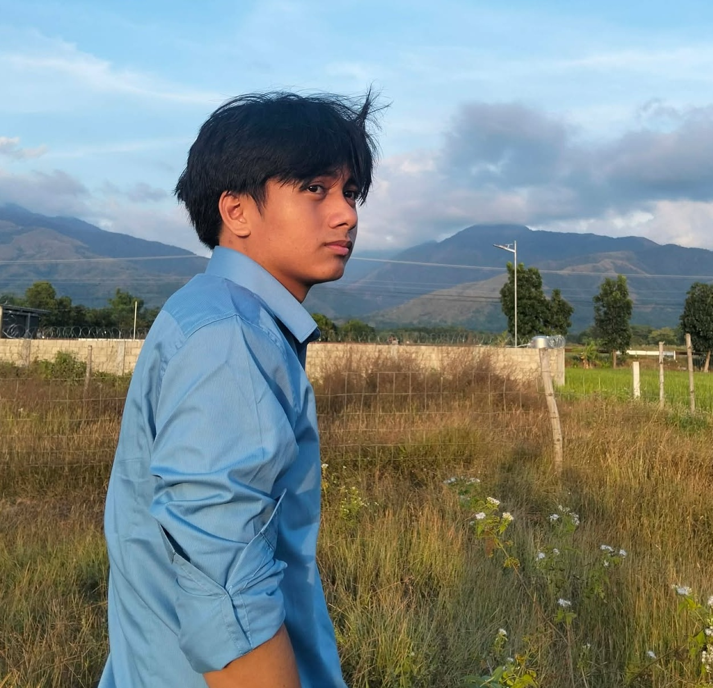

Who Am I?
Cyrus M. Cavero
Hi! I’m Cyrus Cavero, 21 years old, currently based in Santiago City, Isabela. I am an intern at Aretex Laoag, working hard to complete my OJT while gaining valuable experience, with the goal of being absorbed into the company in the future.
Background
I am currently studying at Isabela State University Echague, taking up Computer Science with a major in Data Mining. My academic journey has helped me develop a strong interest in technology and how data, systems, and software can be used to solve real-world problems.
My interests include gaming, coding, cybersecurity, music, and artificial intelligence. These interests motivate me to continuously explore new tools and technologies, both inside and outside the classroom.
As a developer, my goal is to create applications, systems, and websites that help people work more efficiently and support progress. I aim to build solutions that are practical, user-friendly, and meaningful, while continuously improving my skills and knowledge in the field of technology.